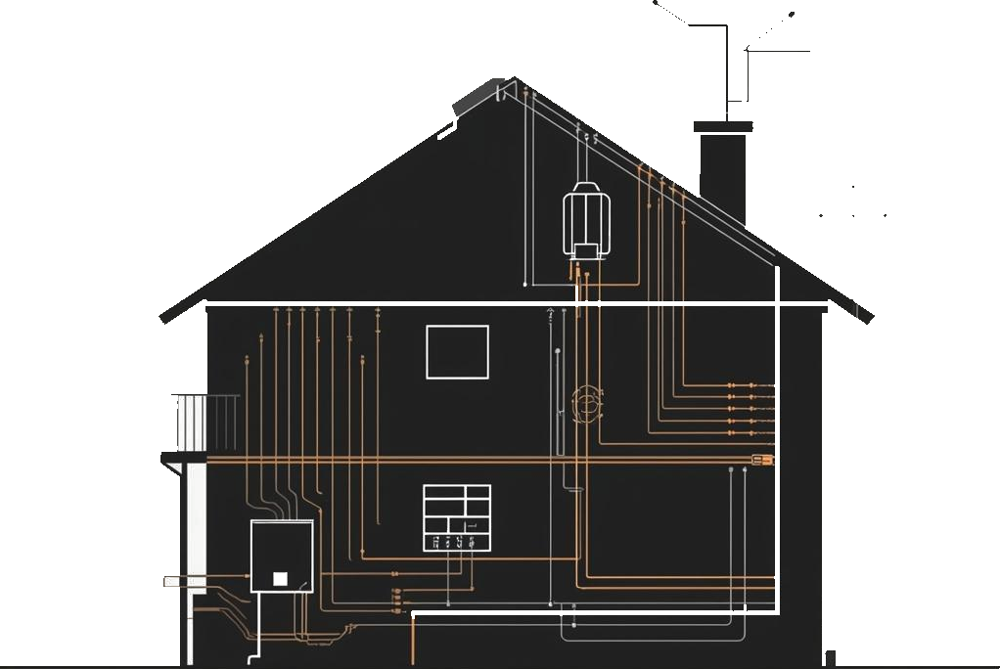
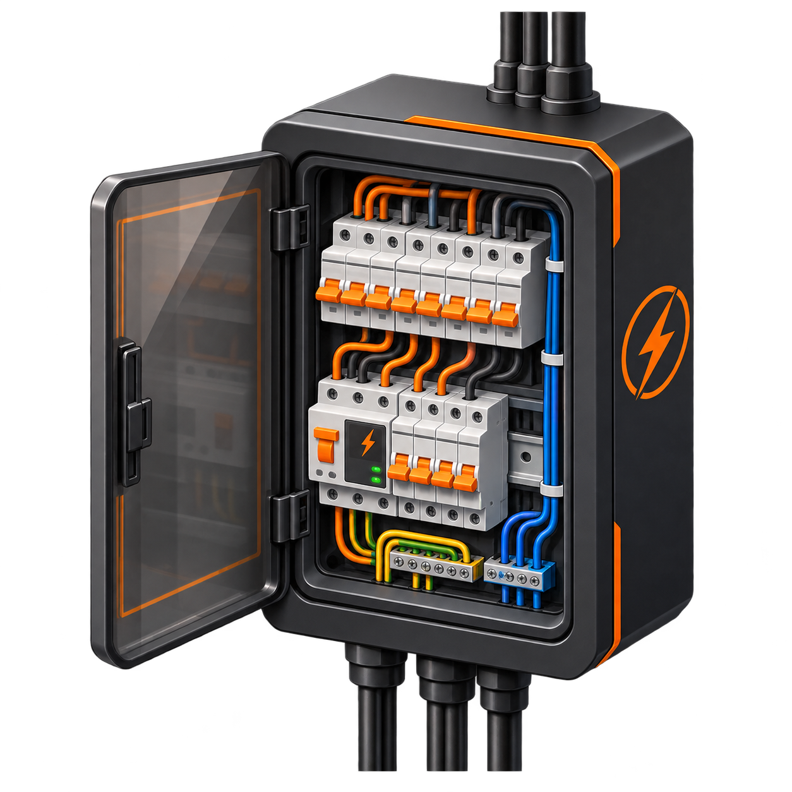
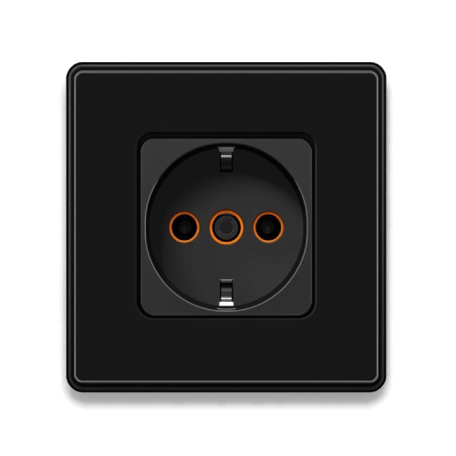
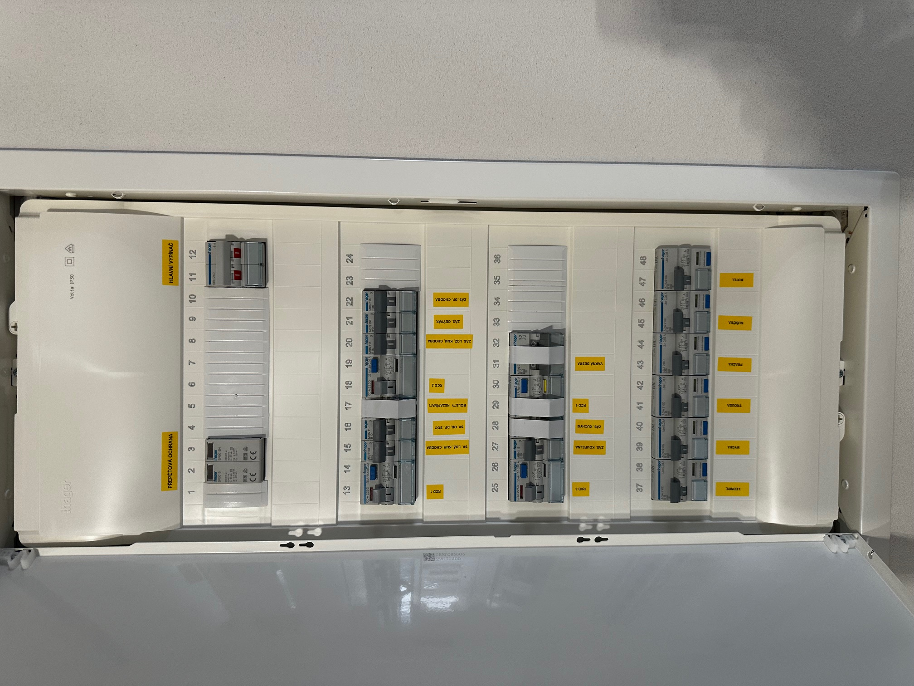

Návrh a poradenství
Pomůžeme vám naplánovat elektroinstalaci a vybrat vhodné řešení podle vašich představ a potřeb.
Zelenka, Šindelář – spolehliví a kvalitní elektrikáři,
kteří připojí i Vaši domácnost.

Jsme Zelenka a Šindelář. Dva mladí elektrikáři z Plzně, které spojuje společná vášeň pro elektřinu a poctivě odvedenou práci.
ZS Elektro jsme založili s jednoduchou myšlenkou – dělat věci pořádně, jednat na rovinu a za svou prací si stát. Věříme, že základem každé dobré spolupráce je důvěra, férový přístup a vzájemná spokojenost.
Nejsme žádná anonymní firma, za kterou se schovává desítka lidí. Jsme to my dva, kdo s vámi komunikuje, plánuje a stojí za výsledkem.
Naším cílem je budovat jméno, na které budeme jednou hrdí. Protože dobrá práce je podle nás ta, za kterou se nemusíme stydět ani po letech.
ZS Elektro – dva chlapi, jeden společný cíl.

Zajišťujeme široké spektrum elektroinstalačních prací v rodinných domech a bytech. Od prvotního návrhu a odborného poradenství až po samotnou realizaci, opravy a následné zajištění potřebné dokumentace.
Ke každému projektu přistupujeme individuálně. Pomůžeme vám najít vhodné řešení, poradíme s výběrem a postaráme se o to, aby vše dávalo smysl nejen dnes, ale i do budoucna.
Pomůžeme vám naplánovat elektroinstalaci a vybrat vhodné řešení podle vašich představ a potřeb.
Realizace elektroinstalací v rodinných domech a bytech.
Řešení závad, opravy a úpravy stávajících elektroinstalací.
Pomoc se zajištěním potřebné dokumentace a případně zprostředkování zkušeného revizního technika.
To vše a mnohem více po vzájemné domluvě.

Podívejte se na ukázku naší práce.
